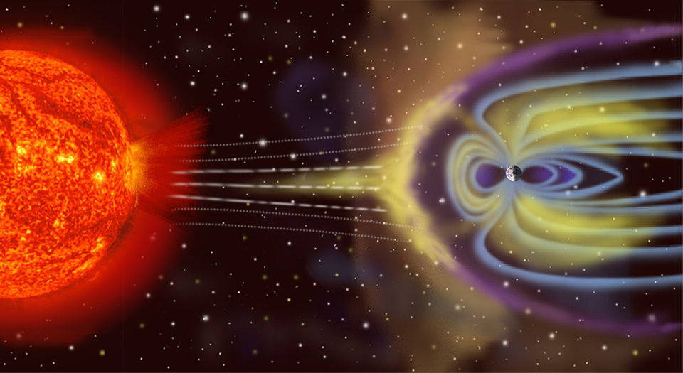
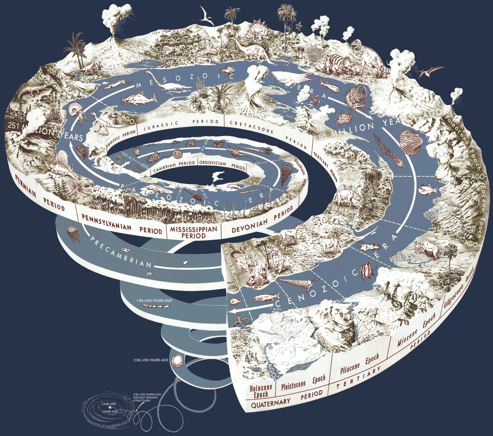
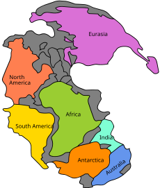
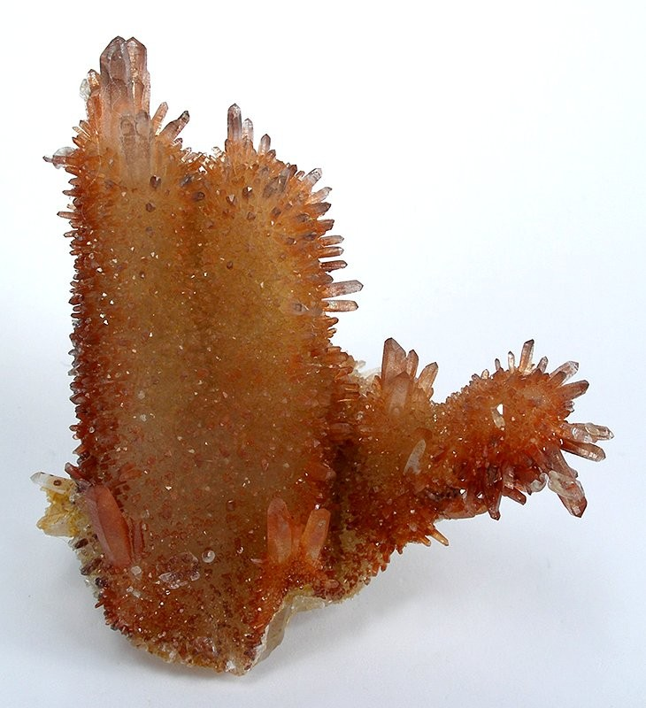
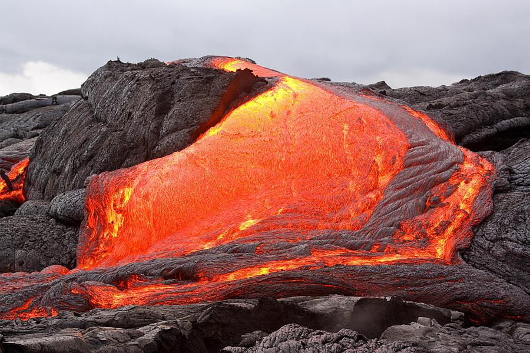
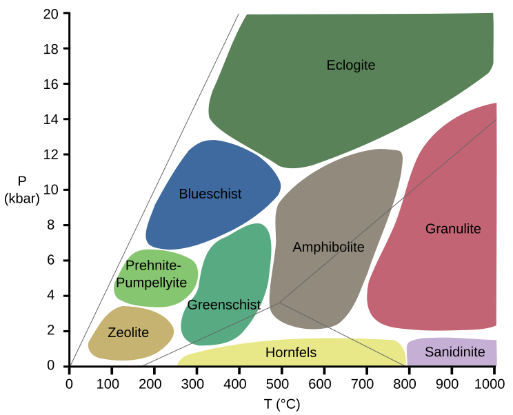

Guida Completa
di Geologia
Esame orale · 28 maggio 2026 · ore 12:00
Fondamenti della Geologia
Da Ulisse Aldrovandi a James Hutton — la scienza che legge la Terra
Definizione
La geologia è la scienza che tratta della composizione, della struttura e della storia evolutiva degli strati interni ed esterni della Terra, e dei processi che l'hanno plasmata. Non si limita a descrivere: oltre a classificare ciò che si osserva, spiega perché quell'oggetto ha quelle caratteristiche e qual è il processo genetico che lo ha formato.
Plutonismo vs Nettunismo
Hutton introdusse il plutonismo: le rocce si formano per consolidamento del magma (da Plutone, dio degli inferi). Si opponeva al nettunismo, che attribuiva origine divina (Nettuno) alla formazione delle rocce.
La diatriba sull'età della Terra
L'attualismo creò un acceso dibattito sull'età della Terra. Tre posizioni:
- Chiesa: Terra creata ~6.000 anni fa (Bibbia) — insufficiente per spiegare qualsiasi processo geologico
- Fisici (Lord Kelvin): stima basata sul raffreddamento per conduzione — superiore ai 6.000 anni ma ancora troppo bassa
- Geologi: con l'attualismo, l'età doveva essere molto maggiore
La diatriba si risolse con la scoperta della radioattività, che fornisce una fonte di calore interna che Kelvin non poteva conoscere.
Attualismo e Uniformitarismo
Principio cardine della geologia: i processi che osserviamo oggi (erosione, sedimentazione, terremoti, vulcanismo) sono gli stessi che hanno operato nel passato. Possiamo usare le velocità attuali per ricostruire la storia geologica («il presente è la chiave del passato»). L'attualismo si oppone al catastrofismo e al creazionismo.
Ripetibilità e verificabilità
Il metodo scientifico richiede che una teoria sia oggettiva, affidabile e verificabile. L'esperimento deve essere ripetibile: se eseguito a Camerino e poi in Giappone, deve produrre lo stesso risultato.
Padri del metodo: Aristotele → Tommaso d'Aquino → Leonardo da Vinci → Kant → Galileo Galilei (metodo galileiano/induttivo) → Einstein (relatività generale).
Il Metodo Scientifico
Il metodo scientifico (o metodo galileiano / induttivo) si articola in sei step:
- Osservazione — tutto parte dall'essere curiosi e osservare un fenomeno
- Esperimento — si perturba un sistema per riprodurre l'osservazione
- Correlazione delle misure — si quantifica la perturbazione
- Modello fisico/concettuale — si capisce il meccanismo
- Modello matematico — la formula che riproduce il fenomeno. Senza questa la teoria non è accettata
- Teoria — è valida finché spiega tutte le osservazioni; può essere aggiornata o sostituita
Esempio per i Beni Culturali: il travertino
Il travertino (CaCO₃), materiale lapideo ampiamente usato in architettura, con il tempo si ossida formando una patina scura. Questa alterazione dipende da tre fattori interagenti: minerale (ossidazione naturale), animale (inquinamento antropico), vegetale (muschi e licheni). Ecco l'interazione tra le tre componenti del sistema Gaia applicata alla conservazione.
Teoria di Gaia
Proposta da James Lovelock, considera il pianeta Terra come un unico sistema integrato in cui le componenti minerale, vegetale e animale interagiscono fortemente. Il pianeta mostra proprietà simili a quelle di un organismo vivente: omeostasi, autoregolazione, retroazione.
Teoria della Deriva dei Continenti (Wegener)
All'inizio del '900, Alfred Wegener pubblicò la teoria della deriva dei continenti, mettendo insieme evidenze già esistenti: similitudine delle linee di costa, stessi fossili su continenti separati, evidenze mineralogiche. I due punti deboli: (1) all'epoca non era dimostrabile il movimento; (2) Wegener non aveva una spiegazione su chi spostasse i continenti. La svolta arrivò dopo la Seconda Guerra Mondiale con sonar, magnetometri e GPS.


Riassunto
La geologia è la scienza che tratta della composizione, della struttura e della storia evolutiva degli strati interni ed esterni della Terra, e dei processi che l'hanno plasmata. Non si limita a descrivere: oltre a classificare ciò che si osserva, spiega perché quell'oggetto ha quelle caratteristiche e qual è il processo genetico che lo ha formato. Il termine fu usato per la prima volta da Ulisse Aldrovandi nel 1603. Il fondatore della geologia moderna è James Hutton con la sua Teoria della Terra.
Hutton introdusse il plutonismo: le rocce si formano per consolidamento del magma. Si opponeva al nettunismo, che attribuiva un'origine divina alla formazione delle rocce. Il principio cardine è l'attualismo (o uniformitarismo): i processi geologici che osserviamo oggi sono gli stessi che hanno operato nel passato. «Il presente è la chiave del passato». L'attualismo generò un acceso dibattito sull'età della Terra, risolto con la scoperta della radioattività.
Il metodo scientifico galileiano si articola in sei step: Osservazione, Esperimento, Correlazione delle misure, Modello fisico concettuale, Modello matematico, Teoria. La teoria di Gaia di Lovelock considera la Terra come un sistema integrato. La teoria della deriva dei continenti di Wegener raccolse evidenze di fit geometrico, fossili e mineralogia, ma mancava di un meccanismo — fornito poi dalla tettonica delle placche.
Sistema Solare e Pianeta Terra
Dalla nebulosa primordiale alla Blue Marble — 4.6 miliardi di anni
Formazione del Sistema Solare
Il Sistema Solare si è formato circa 4,6 miliardi di anni fa da una nebulosa di gas interstellari in contrazione. La temperatura iniziale era molto bassa, con abbondanza di idrogeno ed elio. Il Sole è una stella di seconda generazione (popolazione I): deriva dall'esplosione di una stella precedente, quindi contiene più elementi pesanti. Se fosse stata di prima generazione, non ci sarebbero pianeti rocciosi.
Accensione del Sole e differenziazione planetaria
Nella parte centrale della nebulosa, l'aumento di densità innescò le reazioni termonucleari (fusione idrogeno → elio), accendendo la stella. L'onda d'urto risultante spostò gli elementi leggeri verso l'esterno → pianeti gassosi (Giove, Saturno) e lasciò gli elementi pesanti vicino al Sole → pianeti rocciosi terrestri (Mercurio, Venere, Terra, Marte).
Il Sole e il Sistema Solare
- Il Sole rappresenta il 90% della massa del Sistema Solare
- È una stella di popolazione I (seconda generazione, ricca di elementi pesanti). Popolazione II = più antica e povera di metalli
- Alta metallicità = cruciale per la formazione dei pianeti rocciosi
- Fascia asteroidi: tra Marte e Giove. Due ipotesi: distruzione pianeta preesistente o massa insufficiente per aggregarsi
- Eliopausa: confine dell'eliosfera generata dal vento solare, protegge dai raggi cosmici
Dati fisici della Terra
- Diametro equatoriale: ~12.756 km
- Diametro polare: ~12.714 km (schiacciamento di soli ~42 km — trascurabile!)
- Raggio medio: 6.371 km
- Accelerazione di gravità: 9,8 m/s²
- Velocità di fuga: ~11.000 m/s
- Età: ~4,54 miliardi di anni
Il campo magnetico terrestre
Generato dal nucleo esterno liquido in rotazione (effetto dinamo). La magnetosfera devia il vento solare e protegge l'atmosfera.



Riassunto
Il Sistema Solare si è formato circa 4,6 miliardi di anni fa da una nebulosa di gas interstellari in contrazione. Il Sole è una stella di seconda generazione (popolazione I): deriva dall'esplosione di una stella precedente, quindi contiene elementi pesanti. Se fosse stato di prima generazione, non esisterebbero pianeti rocciosi. L'onda d'urto dell'accensione solare differenziò il materiale: elementi leggeri spinti all'esterno (pianeti gassosi), elementi pesanti rimasti vicino al Sole (pianeti rocciosi). Il Sole rappresenta il 90% della massa del sistema.
Dati fisici della Terra: diametro equatoriale ~12.756 km, diametro polare ~12.714 km (schiacciamento di soli 42 km), raggio medio 6.371 km, gravità 9,8 m/s², velocità di fuga ~11.000 m/s, età ~4,54 miliardi di anni. Il campo magnetico è generato dal nucleo esterno liquido (effetto dinamo); la magnetosfera devia il vento solare proteggendo l'atmosfera.
Tempo Geologico
4.54 miliardi di anni — il calendario della Terra
La Terra ha 4,54 miliardi di anni. Le rocce che permettono questa datazione sono principalmente le rocce sedimentarie, che si depositano a strati e catturano informazioni sull'ambiente di formazione.
Gerarchia del tempo geologico
- Eoni (i più lunghi) → Ere → Periodi → Epoche → Età (le più corte)
- Ogni unità contiene quelle inferiori; più si scende, maggiore è la risoluzione temporale
Attenzione all'esame: Era vs Periodo
Giurassico è un PERIODO dell'era Mesozoica. Dire «era giurassica» è come chiamare «anno febbraio» — si sbaglia categoria. L'era è il Mesozoico (Triassico, Giurassico, Cretacico).
Principio di sovrapposizione stratigrafica
Nelle rocce sedimentarie, gli strati più in basso sono più antichi di quelli in alto. Non vale per le rocce ignee intrusive: un plutone risale dal basso e si inserisce in rocce preesistenti → la roccia più recente si trova sotto rocce più antiche.
I tre Eoni del Fanerozoico
- Paleozoico (541–252 Ma): esplosione cambriana, primi vertebrati, Pangea. Si chiude con l'estinzione Permiano-Triassico (-96% specie marine).
- Mesozoico (252–66 Ma): era dei dinosauri. Pangea si frammenta. Si chiude con l'estinzione K-Pg (meteorite, -75% specie).
- Cenozoico (66 Ma–oggi): era dei mammiferi. Orogenesi alpina e himalayana. Comparsa del genere Homo (~2.5 Ma).


Riassunto
La gerarchia del tempo geologico va dal più lungo al più corto: Eoni, Ere, Periodi, Epoche, Età. I quattro Eoni sono Adeano (4,5→4,0 Ga), Archeano (4,0→2,5 Ga, prime forme di vita procariote), Proterozoico (2,5 Ga→541 Ma, comparsa dell'ossigeno), Fanerozoico (541 Ma→oggi, vita visibile).
Il principio di sovrapposizione dice che gli strati più in basso sono più antichi — ma attenzione: non vale per le intrusioni magmatiche. Il Fanerozoico occupa 3/4 della carta cronostratigrafica per bias di completezza. All'esame: Giurassico è un PERIODO dell'era Mesozoica, non un'era!
Struttura Interna della Terra
Due classificazioni: composizionale e reologica — NON coincidono
Crosta Continentale
- Spessore: ~35 km
- Ricca di Si, Al, O
- Rocce chiare e leggere
- Graniti, quarzo, feldspati
Crosta Oceanica
- Spessore: 5–10 km
- Ricca di Fe, Mg
- Rocce scure e pesanti
- Basalti, olivina, pirosseni
Classificazione composizionale (chimica)
- Crosta (0–35/70 km): continentale (graniti, Si/Al/O) e oceanica (basalti, Fe/Mg). Discontinuità di Mohorovičić (Moho).
- Mantello (fino a 2.900 km): composto quasi esclusivamente da olivina. Discontinuità di Gutenberg a 2.900 km.
- Nucleo esterno (2.900–5.155 km): ferro liquido. Le onde S non lo attraversano → prova dello stato liquido.
- Nucleo interno (5.155–6.371 km): ferro solido. Pressione ~3.6 milioni di atm, T ~5000°C. Discontinuità di Lehmann.
La Reologia
Scienza che studia il comportamento dei materiali sottoposti a sforzo. Tre comportamenti: fragile (si rompe — terremoti in superficie), plastico (si deforma senza rompersi — pieghe in profondità), fluido/viscoso (fluisce; con tempi geologici anche un solido può fluire). Lo stesso materiale può passare da fragile a plastico in base a T e P.
Classificazione reologica (comportamento fisico)
- Litosfera (0–150 km): rigida, fredda. Include crosta + mantello superiore. È frammentata in placche tettoniche.
- Astenosfera (100–400 km): calda, plastica, parzialmente fusa. La litosfera «galleggia» su di essa. Più calda per decadimento di elementi radioattivi.
- Mesosfera (400–2.900 km): solida, ma a temperature elevatissime.
- Nucleo esterno: liquido. Nucleo interno: solido.

Riassunto
La Terra non è una sfera omogenea: l'interno si classifica secondo due criteri distinti che NON coincidono. Composizionale: crosta continentale (35 km, Si/Al/O) e oceanica (5–10 km, Fe/Mg), mantello (olivina fino a 2900 km), nucleo esterno liquido (Fe + S/Ni), nucleo interno solido (Fe puro). Le discontinuità: Moho a 35 km, Gutenberg a 2900 km, Lehmann a 5155 km.
Reologica: litosfera (0–150 km, rigida, placche), astenosfera (100–400 km, plastica, parzialmente fusa — qui galleggia la litosfera), mesosfera (400–2900 km, solida), nucleo esterno liquido, nucleo interno solido. La reologia studia i tre comportamenti: fragile, plastico, fluido. All'esame Tondi chiede di non confondere le due classificazioni.
Tettonica delle Placche
La teoria che unifica tutta la geologia — i continenti si muovono
Dall'intuizione di Wegener alle misurazioni GPS: la tettonica delle placche dimostra che i continenti si spostano di 4–5 cm/anno. Le evidenze: espansione dei fondali oceanici, anomalie magnetiche, distribuzione di terremoti e vulcani, e il GPS.
I tre margini di placca
- Divergenti (costruttivi): placche ← | →. Nuova crosta oceanica. Sforzo estensionale → faglie dirette (normali). Es: dorsale medio-atlantica, Rift Valley, Islanda.
- Convergenti (distruttivi): placche →←. Subduzione della placca più densa (sempre oceanica). Sforzo compressivo → faglie inverse. Orogenesi: Ande, Himalaya, Appennini.
- Trasformi (conservativi): scivolamento laterale ↑↓. Né creazione né distruzione di litosfera. Faglie trascorrenti (strike-slip). Es: Faglia di Sant'Andrea.



Riassunto
La tettonica delle placche è la teoria unificante della geologia moderna. Nasce da Wegener ma si consolida dopo la WWII con quattro evidenze: espansione dei fondali oceanici, anomalie magnetiche, distribuzione globale di terremoti e vulcani, e le misurazioni GPS (4–5 cm/anno). A ogni margine corrisponde un regime deformativo: divergente = faglie dirette + estensione; convergente = faglie inverse + compressione + subduzione; trasforme = faglie trascorrenti (Sant'Andrea). La Pangea si è frammentata per questi meccanismi.
Minerali
Elementi → Minerali → Rocce — la gerarchia della crosta terrestre
Gerarchia fondamentale
Elemento chimico = atomo con specifico numero di protoni/neutroni/elettroni. Minerale = solido cristallino naturale, inorganico, con composizione chimica definita e reticolo cristallino ordinato. Roccia = aggregato naturale di minerali.
Distribuzione dei minerali (crosta)
- Silicati: 91% del totale. Feldspati 51%, Quarzo 12%, Pirosseni 11%, Anfiboli 5%, Miche 5%, Argille 4%, Olivina 3%
- Tutti gli altri (calcite, dolomite, magnetite + migliaia): solo il 5,5%
Proprietà diagnostiche
- Durezza (Mohs): scala da 1 (talco) a 10 (diamante). Vetro riga fino a 5.5, acciaio fino a 6.5.
- Sfaldatura: tendenza a rompersi lungo piani di debolezza atomica (mica → perfetta in una direzione).
- Frattura: rottura irregolare (concoide nel quarzo e ossidiana).
- Lucentezza: metallica, vitrea, perlacea, resinosa, adamantina.
- Colore dello striscio: il colore della polvere su piastrina di porcellana.
Silicati — classificazione strutturale
- Nesosilicati: tetraedri isolati — olivina (mantello)
- Inosilicati: catene — pirosseni (catena singola, clivaggio ~90°), anfiboli (catena doppia, clivaggio ~120°)
- Fillosilicati: piani — miche (muscovite chiara, biotite scura), argille
- Tectosilicati: reticolo 3D — quarzo (SiO₂, dur. 7), feldspati (ortoclasio rosa, plagioclasio bianco — i più abbondanti)
Monte Rosa e Monte Bianco
Il Monte Rosa è un batolite granitico ricco di ortoclasio (K-feldspato rosa). Il Monte Bianco è ricco di plagioclasio (bianco latte). Entrambi sono minerali leggeri (no Fe, no Mg), tipici della crosta continentale.


Riassunto
La gerarchia è Elemento → Minerale → Roccia. I silicati dominano la crosta (91%): feldspati 51%, quarzo 12%, pirosseni 11%, anfiboli e miche 5% ciascuno, olivina 3%. I silicati si classificano per polimerizzazione dei tetraedri SiO₄: nesosilicati (olivina), inosilicati (pirosseni, anfiboli), fillosilicati (miche), tectosilicati (quarzo, feldspati). Riconoscimento: quarzo dur. 7, calcite reagisce con HCl. All'esame: descrivi le proprietà diagnostiche (durezza, sfaldatura, lucentezza, striscio) prima di dare il nome.
Rocce Ignee
Nate dal fuoco — solidificazione del magma
Le rocce ignee derivano dal raffreddamento del magma. Classificazione per tessitura (dimensione cristalli) e composizione chimica.
Intrusive vs Effusive
- Intrusive (plutoniche): raffreddamento lento in profondità → cristalli grandi (faneritica). Es: granito.
- Effusive (vulcaniche): raffreddamento rapido in superficie → cristalli piccoli/assenti (afanitica). Es: basalto.
Serie di Bowen
La Serie di Bowen descrive l'ordine di cristallizzazione: i minerali femici (scuri, Fe/Mg) cristallizzano per primi ad alta T; quelli sialici (chiari, Si/Al) per ultimi. Ramo discontinuo (minerali femici) e ramo continuo (plagioclasi).
Classificazione composizionale
- Felsiche (acide): SiO₂ >65%, chiare. Granito (intrusivo) ↔ Riolite (effusivo)
- Intermedie: SiO₂ 55–65%. Diorite ↔ Andesite
- Mafiche (basiche): SiO₂ 45–55%, scure, Fe/Mg. Gabbro ↔ Basalto
- Ultramafiche: SiO₂ <45%. Peridotite (mantello)
Genesi dei magmi
- Margini divergenti: fusione per decompressione — l'assottigliamento litosferico riduce P → il materiale caldo fonde.
- Zone di subduzione: l'acqua trascinata in profondità abbassa il punto di fusione del mantello → magma → vulcani (Ande).



Riassunto
Le rocce ignee si formano dal raffreddamento del magma. Intrusive: lento, cristalli grandi, faneritiche (granito). Effusive: rapido, cristalli piccoli o vetro, afanitiche (basalto). Composizione: felsiche (SiO₂>65%, chiare), intermedie, mafiche (SiO₂ 45–55%, scure, Fe/Mg), ultramafiche (peridotite del mantello). La Serie di Bowen: olivina cristallizza per prima ad alta T, quarzo per ultimo a bassa T. Due meccanismi di fusione: decompressione ai margini divergenti, idratazione alle zone di subduzione.
Rocce Sedimentarie
Il libro della storia della Terra — ogni strato è una pagina
Si formano per accumulo e litificazione di sedimenti. Coprono il 75% della superficie terrestre ma solo il 5% in volume della crosta. Sono le uniche a contenere fossili.
Classificazione
- Clastiche (detritiche): frammenti di rocce preesistenti. Classificate per granulometria: conglomerato (>2 mm, arrotondati) / breccia (>2 mm, spigolosi) → arenaria → siltite → argillite.
- Chimiche: precipitazione da soluzione. Es: calcare, evaporiti (salgemma, gesso).
- Organogene (allochimiche): accumulate da organismi. Es: calcari a plancton, carbone.
Princìpi stratigrafici
- Sovrapposizione: lo strato più in basso è il più antico (sedimentarie — non intrusioni!)
- Orizzontalità originaria: i sedimenti si depositano orizzontalmente
- Continuità laterale: uno strato si estende fino ad assottigliarsi

Riassunto
Le rocce sedimentarie sono il "libro della storia della Terra": si formano per litificazione di sedimenti e sono le uniche a contenere fossili. Tre classi: clastiche (conglomerato, arenaria, argillite — classificate per granulometria), chimiche (calcare, evaporiti), organogene (calcari a plancton, carbone). Principi stratigrafici: sovrapposizione (strato sotto = più antico, MA NON per intrusioni!), orizzontalità originaria, continuità laterale. All'esame: conglomerato (arrotondato) vs breccia (spigolosa).
Rocce Metamorfiche
Trasformate da pressione e temperatura — allo stato solido
Il metamorfismo trasforma rocce preesistenti attraverso calore, pressione e fluidi chimicamente attivi — allo stato solido. Produce foliazione e ricristallizzazione.
Tipi di metamorfismo
- Di contatto (termico): calore da intrusione magmatica → aureola metamorfica. Roccia tipica: cornubianite.
- Regionale (dinamotermico): P e T elevate su vaste aree durante l'orogenesi. Produce foliazione.
- Cataclastico: lungo faglie, frantumazione meccanica → brecce di faglia.
Serie metamorfica (grado crescente)
- Argillite → Ardesia: basso grado, foliazione piana, si sfalda in lastre
- Ardesia → Fillade: grado medio-basso, lucentezza sericea
- Fillade → Scisto: grado medio, grandi miche visibili, scistosità marcata
- Scisto → Gneiss: alto grado, bande chiare (Qz+Feld) e scure (biotite+anfibolo)
- Fusione parziale → Migmatite: grado altissimo


Riassunto
Il metamorfismo trasforma rocce allo stato solido per T, P e fluidi. Tre tipi: di contatto (calore da intrusione → aureola), regionale (vaste aree in orogenesi → foliazione), cataclastico (faglie → brecce). Serie metamorfica: argillite → ardesia (basso grado) → fillade → scisto (medio) → gneiss (alto, bande) → migmatite (fusione parziale). All'esame: descrivi la foliazione e il grado metamorfico prima di dare il nome.
Deformazioni Crostali: Faglie e Pieghe
Quando la roccia si piega, si rompe, scivola
Le rocce sottoposte a stress rispondono in due modi: deformazione fragile (faglie, fratture — superficiale, <15 km) o deformazione duttile (pieghe — profondo, >15 km). La risposta dipende da T, P, velocità di deformazione e tipo di roccia.
Faglie
Una faglia è una frattura con movimento. Terminologia: tetto = blocco sopra il piano; letto = blocco sotto il piano.
- Faglia diretta (normale): tetto scende rispetto al letto. Regime distensivo → margini divergenti, rift.
- Faglia inversa: tetto sale rispetto al letto. Regime compressivo → margini convergenti. Se angolo basso → sovrascorrimento.
- Faglia trascorrente (strike-slip): movimento orizzontale. Margini trasformi.
Riconoscere faglia diretta vs inversa su carta geologica
Diretta: il tetto ha rocce più recenti del letto (la parte sollevata viene erosa, esponendo rocce più antiche). Inversa: il tetto ha rocce più antiche del letto (rocce profonde vengono spinte sopra).
Pieghe
- Anticlinale: convessa verso l'alto. Strati più antichi nel nucleo.
- Sinclinale: concava verso l'alto. Strati più giovani nel nucleo.

Riassunto
Deformazione fragile (<15 km, faglie, rottura) vs duttile (>15 km, pieghe, plastica). Le faglie si classificano per movimento relativo: diretta (tetto scende, estensionale, divergenti), inversa (tetto sale, compressivo, convergenti), trascorrente (orizzontale, trasformi). Tetto = blocco SOPRA il piano, letto = blocco SOTTO. Su carta: faglia diretta → tetto con rocce più recenti; faglia inversa → tetto con rocce più antiche. Anticlinale: convessa verso l'alto, strati antichi nel nucleo. Sinclinale: concava, strati giovani nel nucleo.
Vulcani e Terremoti
Dove la Terra respira fuoco e trema
Vulcani
Un vulcano è il punto in cui il magma raggiunge la superficie. La forma e lo stile eruttivo dipendono dalla viscosità del magma.
- Vulcani a scudo: magmi basaltici, poco viscosi → pendii dolci, eruzioni effusive. Es: Mauna Loa (Hawaii).
- Stratovulcani: magmi andesitici, viscosità media → cono ripido, strati lava+piroclastiti. Es: Vesuvio, Stromboli, Fuji.
- Duomi di lava: magmi riolitici, molto viscosi → cupola, eruzioni esplosive. Es: Monte Sant'Elena (1980).
Eruzioni effusive: colate laviche (pahoehoe a corda, aa a blocchi). Eruzioni esplosive: colonna eruttiva, flussi piroclastici, lahars. Piroclastiti: ceneri (<2 mm), lapilli (2–64 mm), bombe (>64 mm). Pillow lavas: lava a cuscino eruttata sott'acqua.

Terremoti
Un terremoto è una vibrazione del terreno per passaggio di onde sismiche generate dalla rottura di rocce lungo una faglia. Non sono prevedibili: non si può prevedere né quando né dove.
- Magnitudo: energia rilasciata alla sorgente (scala Richter/magnitudo momento).
- Intensità: effetti in superficie (scala MCS, Mercalli-Cancani-Sieberg).
- Perché i terremoti sono pericolosi: gli edifici sono progettati per carichi verticali (gravità), ma i terremoti producono accelerazioni orizzontali non previste.
- Mediterraneo sismico: convergenza tra placca africana ed euroasiatica. L'Italia è zona di collisione attiva.

Riassunto
I vulcani sono classificati per forma e stile eruttivo: a scudo (basaltico, effusivo, Hawaii), stratovulcani (andesitico, Vesuvio/Stromboli), duomi (riolitico, esplosivo). Prodotti: colate laviche, piroclastiti (ceneri, lapilli, bombe), pillow lavas (sottomarine). I terremoti sono vibrazioni da rottura lungo faglie — NON prevedibili. Magnitudo (energia) vs intensità (effetti MCS). Il pericolo sismico deriva dalle accelerazioni orizzontali non previste nei progetti degli edifici. L'Italia è sismica per la convergenza Africa-Eurasia.
Guida all'Esame
Strategia, metodo Tondi, priorità — come affrontare l'orale
📅 Esame orale: 28 maggio 2026 — ore 12:00
Struttura dell'esame
- Riconoscimento rocce: 2 campioni da descrivere (15–20 min). Si parte dall'osservazione, NON dal nome. Ordine: Osservazione → Minerali → Macro-gruppo → Sotto-classificazione → Processo genetico → NOME (ultima cosa).
- Domande aperte: 4–5 domande a risposta estesa. Completezza, chiarezza, terminologia precisa.
- Domande rapide: 5–6 domande brevi su concetti chiave.
Metodo Tondi (risposte aperte)
- Definisci — il concetto in una frase. «Il minerale è un solido cristallino naturale con composizione chimica definita.»
- Classifica — inquadra nel sistema più ampio. «I minerali si dividono in silicati e non-silicati.»
- Esemplifica — almeno un esempio concreto per categoria. «Il quarzo è un tectosilicato, l'olivina un nesosilicato.»
- Collega — lega ad almeno un altro argomento. «L'olivina cristallizza per prima nella Serie di Bowen ed è il minerale dominante del mantello.»
- Concludi — sintesi che risponde alla domanda.
⚠️ Se sbagli il nome della roccia
Non è grave se il ragionamento geologico è corretto. Il nome è l'ultima cosa. L'esame valuta il percorso, non la risposta secca. Tondi è un geologo strutturale: enfasi su tettonica, faglie, deformazione fragile vs duttile.
Argomenti ad alta probabilità
- ⭐ Tettonica delle placche (margini, subduzione, orogenesi)
- ⭐ Faglie — classificazione, tetto/letto, diretta vs inversa su carta
- ⭐ Deformazione fragile vs duttile
- ⭐ Classificazione rocce ignee (Serie di Bowen, felsico/mafico, tessitura)
- ⭐ Serie metamorfica (ardesia→gneiss, foliazione crescente)
- ⭐ Scala del tempo geologico (ere, fossili guida, K-Pg)
- ⭐ Silicati (neso, ino, fillo, tecto)
- ⭐ Struttura interna (Moho, Gutenberg, Lehmann — composizionale vs reologica)
Riconoscimento rapido rocce
- Chiara e leggera = continentale (Si, Al). Scura e pesante = oceanica (Fe, Mg).
- Clasti visibili: sedimentaria. Ruvida = arenaria. Liscia e compatta = calcare o argillite. Se reagisce con HCl = calcite (calcare).
- Cristalli grandi visibili: intrusiva (granito, gabbro). Grana fine/vetro: effusiva (basalto, riolite).
- Foliazione/bande: metamorfica (ardesia, scisto, gneiss).
Riassunto
L'esame è orale: 2 campioni di roccia da descrivere in 15–20 minuti, poi domande aperte e rapide. L'ordine del ragionamento è: Osservazione → Minerali → Macro-gruppo → Sotto-classificazione → Processo genetico → NOME. Il nome della roccia è l'ULTIMA cosa da dare. Se sbagli il nome ma il ragionamento è corretto, non è grave. Il Metodo Tondi: Definisci → Classifica → Esemplifica → Collega → Concludi. Tondi è un geologo strutturale: enfasi su tettonica delle placche, faglie, deformazione fragile vs duttile. Riconoscimento rapido: chiara = continentale, scura = oceanica; clasti = sedimentaria; cristalli grandi = intrusiva; foliazione = metamorfica.
Curiosità dalle Lezioni
Aneddoti, storie e fatti che il Prof. Tondi ha raccontato a lezione
Perché «Geologia» si chiama così?
Dal greco gê (Terra) + lógos (discorso, studio). Il termine fu coniato da Ulisse Aldrovandi nel 1603, ma si diffuse solo nell'Ottocento con i lavori di Charles Lyell.
James Hutton e il «Tempo Profondo»
Hutton osservò la discordanza angolare di Siccar Point (Scozia): strati verticali di arenaria rossa sormontati da strati orizzontali. Capì che tra i due eventi dovevano essere passati milioni di anni. Coniò il concetto di deep time: «No vestige of a beginning, no prospect of an end».
La Scala di Mohs
Inventata nel 1812 da Friedrich Mohs, mineralogista tedesco. È una scala relativa e ordinale: il diamante (10) non è il doppio di duro dell'apatite (5), ma circa 160 volte più duro.
Il Meteorite di Chicxulub
Il cratere da impatto (180 km di diametro) fu scoperto nello Yucatán (Messico) solo negli anni '90. L'impatto rilasciò un'energia pari a 10 miliardi di bombe di Hiroshima, causando l'estinzione K-Pg.
La Dorsale Medio-Atlantica
È la più lunga catena montuosa della Terra (oltre 16.000 km), ma quasi interamente sommersa. L'Islanda è l'unico punto emerso. Qui si forma nuova crosta oceanica al ritmo di circa 2,5 cm/anno.
Peridotite e il mantello
La peridotite (olivina + pirosseno) è la roccia del mantello. Non la vediamo quasi mai in superficie, tranne in rari affioramenti (ofioliti) dove l'obduzione ha spinto brandelli di mantello sopra la crosta.
Domande del Prof. Tondi
Le domande che ha fatto più spesso — preparati su queste
⚠️ Queste sono domande reali tratte dalle trascrizioni delle lezioni
1. «Mi parli della tettonica delle placche»
Domanda aperta classica. Aspettativa: spiegare i tre margini (divergente, convergente, trasforme), associare il regime deformativo corretto (faglie dirette, inverse, trascorrenti), dare esempi geografici (dorsale atlantica, Ande, Sant'Andrea), menzionare il motore (convezione del mantello) e il GPS.
2. «Che cos'è una faglia? Me la classifichi»
Definizione (frattura con movimento), terminologia tetto/letto, classificazione (diretta, inversa, trascorrente), associazione con i regimi deformativi e i margini di placca.
3. «Deformazione fragile vs duttile — cosa cambia?»
Fragile <15 km (faglie, rottura), duttile >15 km (pieghe, plastica). Controllata da T, P, velocità di deformazione, tipo di roccia.
4. «Mi descriva questo campione»
Osservazione del colore (chiaro/scuro → continentale/oceanico), tessitura (cristalli grandi/piccoli → intrusiva/effusiva, clasti → sedimentaria, foliazione → metamorfica), minerali visibili, durezza, reazione HCl. Il nome viene per ultimo.
5. «Cos'è il ciclo delle rocce?»
Modello che descrive le trasformazioni tra rocce ignee, sedimentarie e metamorfiche. Processi: erosione/sedimentazione → sedimentarie; seppellimento + P e T → metamorfiche; fusione → magma → ignee. Il motore è la tettonica delle placche.
6. «Mi parli della Serie di Bowen»
Ordine di cristallizzazione: olivina (alta T) → pirosseni → anfiboli → biotite → quarzo (bassa T). Ramo discontinuo (femici) e ramo continuo (plagioclasi). Olivina ultima a fondere.
7. «Qual è la differenza tra classificazione composizionale e reologica?»
Composizionale (chimica): crosta, mantello, nucleo. Reologica (fisica): litosfera, astenosfera, mesosfera, nucleo. NON coincidono. Tondi ci tiene che non vengano confuse.
8. «Com'è fatto l'interno della Terra?»
Dall'esterno: crosta (cont. 35 km / ocean. 5-10 km) → Moho → mantello (olivina, 2900 km) → Gutenberg → nucleo esterno liquido (Fe) → Lehmann (5155 km) → nucleo interno solido (Fe). Le onde S non attraversano il nucleo esterno = prova del liquido.